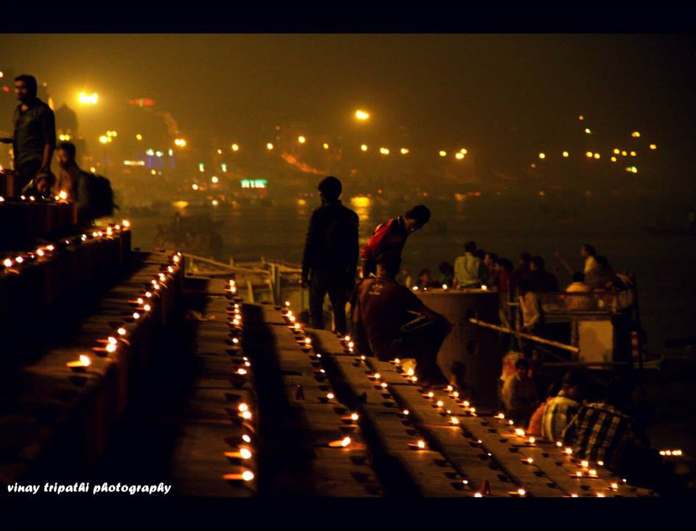

If Varanasi possesses a single pulsing nucleus, it is Dashashwamedh Ghat. Situated at the direct terminus of Godowlia lane—the frenetic commercial artery of the old city—this monumental flight of sandstone steps descends into the sacred waters of the Ganges, serving as the theatrical stage upon which the city's three-thousand-year-old dialogue between water, light, and mortality is performed daily.
Mythological Origins & Architectural History
The name Dashashwamedh translates literally from Sanskrit as "the place of the ten (dasha) horse (ashwa) sacrifices (medha)." According to Hindu mythological lore recorded in the Kashi Khanda, the creator god Lord Brahma performed this elaborate ritual here to welcome Lord Shiva back to Kashi after an era of cosmic estrangement. A parallel tradition holds that the ceremony was instituted by King Divodasa under Brahma's divine direction to assert moral sovereignty over the sacred territory.
While rituals at this river crossing have been enacted continuously for millennia, the present architectural terracing dates primarily to the eighteenth century. In 1748, Peshwa Balaji Baji Rao reconstructed the broad stone flights. Several decades later, around 1774, Ahilyabai Holkar, the revered Maratha queen of Malwa, commissioned extensive masonry fortifications, bastions, and ghat steps that give Dashashwamedh its imposing, resilient presence against the turbulent monsoonal floods of the Ganges.
Key Historical Facts
- Literal Meaning: Ghat of the Ten Horse Sacrifices
- Rebuilt By: Peshwa Balaji Baji Rao (1748) and Queen Ahilyabai Holkar of Indore (1774)
- Riverfront Position: Central ghat, flanked by Prayag Ghat and Rajendra Prasad Ghat
- Architectural Style: Eighteenth-century Maratha stone terracing and stepped sandstone retaining walls
- Primary Ritual: Daily Evening Maha Aarti at dusk (18:30–19:30)
The Choreography of the Maha Aarti
Every evening at twilight, as the sun casts copper reflections across the unhurried current of the river, Dashashwamedh transforms into an open-air amphitheater. A team of young Hindu priests (pujaris), clad in identical saffron and gold silk robes, assemble upon elevated wooden platforms erected at the water’s edge. Behind them, temple bells clang rhythmically, conch shells resonate across the river basin, and brass cymbals maintain a hypnotic cadence.
With practiced synchronization, the priests elevate multi-tiered brass lamp stands containing oiled wicks burning with sacred camphor. The resulting plumes of light and fragrant smoke are waved in geometric arcs in reverence to Surya (the sun god), Agni (fire), Shiva, and Ma Ganga (Mother Ganges). Hundreds of pilgrims and travelers gather in tightly packed wooden rowing boats moored along the water's surface, releasing floating leaf-bowls (diyas) carrying marigold blossoms and flickering wicks into the river drift.


Daylight Rhythm: From Brahma Muhurta to Dusk
While the evening ceremony draws international attention, Dashashwamedh's daytime rhythm offers a profound portrait of authentic Varanasi life. Well before dawn, during the auspicious period of Brahma muhurta, bathers descend into the cold river to offer arghya (water libations) facing the rising sun. Underneath huge bamboo parasols (chhatris), resident Brahmin priests (pandas) sit cross-legged on elevated wooden boards (chauki), applying sandalwood and vermilion tilaks to bathers and administering ancestral rites.
Flower sellers weave fresh garlands of orange marigolds and white jasmine; tea stall vendors boil thick pots of spiced milk tea in earthenware cups (kulhads); and boatmen negotiate rides to the opposite sandy bank. Because Dashashwamedh provides immediate access to the sacred Vishwanath Gali—the corridor leading directly to the Kashi Vishwanath temple complex—it remains the primary gathering point for visiting pilgrims throughout the calendar year.
Visitor Information & Guidelines
- Best Time to Visit
- 05:00 to 07:00 for peaceful dawn rituals; 17:30 to 20:00 for the evening Aarti.
- Boat Access
- Hand-rowed boats can be hired directly from the steps. Fixed government rates are posted near the police outpost, but bargaining remains standard practice.
- Photography
- Photography is entirely permitted during the Aarti and general ghat scenes. Respect bathers and personal prayer moments.
- Getting There
- Auto-rickshaws and cycle-rickshaws drop passengers at Godowlia Chowk. From Godowlia, it is an easy 300-meter walk down Dashashwamedh Road to the riverbank.
Note: On full moon evenings (Purnima), Dev Deepawali, and major festival dates like Maha Shivaratri, arrive at least 90 minutes before sunset to secure seating on the stone terraces or on moored boats.